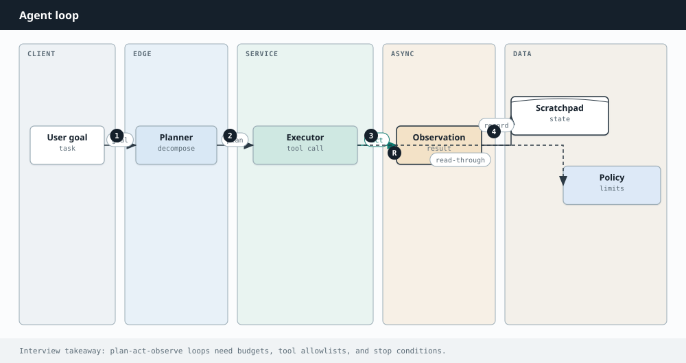

AI Engineering
Chapter 39
Agentic patterns

A G E N T S A N D T O O L S
A plain model just answers in one shot. An agent can act. It decides to use a tool, looks at the result, and keeps going until the job is done. That loop, plus a few patterns layered on top, is what turns a chatbot into something that books the flight, fixes the code, or researches the report.
The agent loop Think what to do next call Tools Act repeat until done search, code, APIs call a tool result Observe read the result An agent loops: reason about the next step, act with a tool, observe the result, and repeat until finished.
The core loop
The workhorse pattern is often called think, act, observe. The model reasons about what to do next, acts by emitting a structured tool call, and your code runs that tool and feeds the result back so the model can observe it. Then it loops. It might search the web, run code, or hit an API, using each result to decide the next step, until it has enough to give a final answer.
The patterns on top
Tool use, also called function calling, is the foundation: the model outputs which tool to call and with what arguments, and you execute it. Planning has the agent break a goal into steps first, then carry them out. Reflection has it critique and revise its own output before finishing. Multi agent setups split the work across specialists, say a planner, a coder, and a reviewer, that hand work to each other.
def run_agent(goal, tools, client):
messages = [{"role": "user", "content": goal}]
for step in range(MAX_STEPS): # always cap the loop
resp = client.messages.create(
model="claude-sonnet-4-5", max_tokens=1000,
tools=tools, messages=messages,
)
messages.append({"role": "assistant", "content": resp.content})
if resp.stop_reason != "tool_use":
return resp # model gave a final
answer
for call in tool_calls(resp): # act: run each requested
tool
result = run_tool(call.name, call.input)
messages.append(tool_result(call.id, result)) # observe
raise RuntimeError("hit the step limit")
T H E M O D E L D E C I D E S , Y O U R C O D E E X E C U T E S
A crucial split: the model only proposes a tool call, it never runs anything itself. Your code decides whether to run it, validates the inputs, executes, and returns the result. That boundary is where you put guardrails, permissions, and logging, and it is what keeps an agent safe.
L O O P S C A N R U N A W A Y
An agent that keeps thinking and acting can loop forever, rack up cost, or wander down a wrong path. Always cap the number of steps, validate what tools return, and for anything risky like sending email or spending money, keep a human or a hard rule in the loop.
Going Deeper
Beyond the basic loop
The think, act, observe loop is the foundation, but a few patterns layer on top for harder work. Plan and execute has the agent write a full plan first, then carry out each step, which keeps it from wandering. Reflection has it critique and revise its own output before finishing, catching its own mistakes. Multi agent setups split a big job across specialists, say a researcher, a coder, and a reviewer, coordinated by an orchestrator, so each agent has a narrow, well defined role. More structure is not always better, though, so reach for these only when a single loop genuinely struggles.
Orchestrator plans and delegates delegate results Researcher Coder Reviewer specialists hand work back and forth under one orchestrator For bigger jobs, an orchestrator splits the work across specialist agents that each focus on one thing.
| Pattern | Use it when |
|---|---|
| ReAct loop | most tasks, tool use with reasoning |
| Plan and execute | long tasks that benefit from a plan up front |
| Reflection | quality matters and self review helps |
| Multi-agent | distinct subtasks need distinct specialists |
| STEP BY STEP One turn of the agent loop, from reasoning to the next action. 1 The model reads the goal and everything observed so far. | |
| 2 It reasons about the next step and decides whether it needs a tool. | |
| 3 If it does, it emits a structured tool call with the arguments it wants. | |
| 4 Your code validates and runs that tool, then feeds the result back in. | |
| 5 The model observes the result and loops again, or returns a final answer if the task is done. A step limit stops any runaway loop. |
The model observes the result and loops again, or returns a final answer if the task is done. A 5 step limit stops any runaway loop.